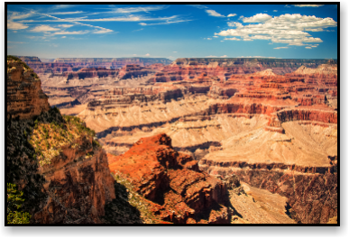

The Grand Canyon National Park is easy to recognize by its many colorful rock layers. The layers were formed when the Colorado River cut through the rocks. The path that the river left behind became the Grand Canyon.
The Grand Canyon is in Arizona. It is vast! It is 277 river miles long, its average depth is a mile and at its widest point it is 18 miles.
It became America's second national park in 1919 when President Woodrow Wilson signed the Grand Canyon National Park Act. Since 1979 it is also a World Heritage Site.
The Grand Canyon is in Arizona. It is vast! It is 277 river miles long, its average depth is a mile and at its widest point it is 18 miles.
It became America's second national park in 1919 when President Woodrow Wilson signed the Grand Canyon National Park Act. Since 1979 it is also a World Heritage Site.
